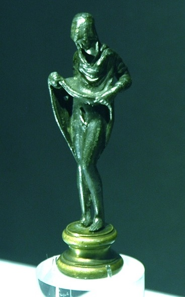

In 2019 I got a question from an exited TERF on tumblr about the nature of gender socialization, which I decided to use as an opportunity to collect everything I knew about the subject. It's a rambling, rambunctious little essay and we'd approach it differently now. I'd at least trim the very long block quotes which insult the reader's dignity. I'd probably write it in a French rather than German idiom (if Being speaks German, neurotic sexuality speaks French). But I am not too bashful of the argument to share it. In this version, I've added brief notes to correct errors where necessary.
the ask: I just got out from the terf pit and i dont understand how can trans people expierience socialisation of their own gender. Is it like the way that they internalize the messaging? But how come there are so many trans ppl who dont think theyve been their gender since childhood? Is that an inherntly transmisogynistic way of viewing yrself? - signed, 'sockpupacc'
my answer:
interesting ask… I’m going to give an extremely long answer, so uh, thanks for reading >.<
I think bringing up two preliminary points would help here:
1. Trans women existed prior to hormone replacement therapy, ‘the surgery’, etc. This should be obvious (why find a cure for an illness that doesnt exist?), but we often think of trans women as something invented in a laboratory, dreamed up by medical science…
We have a bit of an issue when saying this, though: the notion of the transgender or transsexual actually was invented by the institute (Hirschfield et al), although it was likely not conjured up out of thin air but out of patient testimony (its significant to note that at the time there had only been one patient, however). [Ed: misleading. They had only formally 'described' one 'case', Dora R. But they had some number of other 'patients', if probably still a small sample size.] I want to do a lot more reading into the specific factors at play so I can’t really say exactly why this happened yet, but we can still immediately see that there was a significant conceptual shift between the pre- and post-institute perceptions of - what else to call it? - this thing that I am.
What is this shift? Prior to the developments of the institute, we could never have been understood to change genders, since no change takes place. Historical discourses about us tend to acknowledge our (peculiar, deviant) womanhood without ever picturing a change of gender taking place. Theodore of Tarsus, using term baedling, with the masculine -ling suffix, describes us as ‘soft, like an adulturess’ [or ‘like a harlot’] (in a discourse where softness was (ef)femininely encoded). He lists us in his book of punishments (the Canon of Theodore) after enumerating the punishment for men sleeping with men, and men sleeping with animals, giving first the punishment for men who sleep with a baedling and then the punishment - which is given the most severe punishment among the sexual offenses - for a baedling who sleeps with another baedling. Similarly the contemporary Anglo-Saxon term waependwifstre, generally recorded as a synonym, literally means female creature (wifstre) with a penis (waepend). [Women were called wif then, but the term used for men, werman, is missing from this word.]
This does not necessarily mean that perceptions of us in history were always fixed, and some were obviously processural. As we’ve been discussing recently, Herodotus account of the enaree among the Scythians were of a ‘female sickness’ which he theorized was caused by horseback riding(!). He describes them as “hermaphroditic” diviners given knowledge of divination by Aphrodite, in an account somewhat recalling the Greek goddess Aphroditus, a daughter of Aphrodite, depicted as having breasts and feminine features but raising her skirt to reveal a penis.

This goddess was later given the name Hermaphroditus, from which the outdated medical term for intersex conditions hermaphrodite comes. But historically the term hermaphrodite was used for a kind of lived gender variance in a way that it was not in modern medical discourse: hermaphroditism was associated with transvestism, especially men wearing women’s clothes, and this meaning was preserved in the 19th century slang term morphodyke (which is only a corruption of hermaphrodite) which meant something similar to ‘dolling up’ or dressing glamorously. I, again, need to read more about the specifics of the introduction of the term hermaphrodite to medical discourse to really understand what happened - wether or not, for example, the initial researchers thought that they were describing something that had not been described before (and were therefore making a comparison between their subjects and us), or that they were extending medical empiricism to inherited categories of gender variance (and therefore were for the first time separating us from one another). The latter seems to be the most likely, owing to the initial categories of ‘true hermaphroditism’ and ‘psuedo-hermaphroditism’. It is possibe that, historically, persons of biologically ambiguous gender and people of variant gender presentation were not easily separable from one another.
There are a great deal more examples than just these two, all over the world and at many different times in history, but I have a much more limited knowledge of them (esp. of those outside of Europe), and this part is long enough already… But hopefully the examples already given make the point clear: any analysis of trans women’s existence needs to account for the social position and self-perception of trans women prior to the notion of a ‘change’ in genders ever occuring. That is to say if trans women are only treated as women after transition we do not see how the social positions of these women could be accounted for.
[Interestingly, there may have been other instances of a before/after conception of us existing in history. Catallus describes the priestesses of Cybele (who were castrated and dressed as women) as male until their castration, after this describing them as female. Other commentators however describe them as always having been female, even prior to the castration, and Catallus also described Caesar’s catamite as his ‘wife’ in one of his six poems about Caesar being a bottom, so its possible Catallus just had some idiosyncratic hang-ups about gender.]
2. The notion of socialization is a little more problematic than we tend to allow for when we use it. A friend (and I apologize to them for not naming them here, but given the circumstances of this ask I feel it to be prudent - no offense ‘sockpupacc’!) always says that TERF’s use of socialization does not differ substantially from John Money’s. The naive view of socialization is, essentially, that one is raised to be a certain gender and that decides one’s gender. This raising is done principally by the parents and secondarily by the school. Socialization is individuated (each child receives a unique socialization), deterministic (raising a child as a girl makes them a girl), and intentional (there is an actor capable of administering a socialization).
This view has a few issues: why does it only apply to gender and not, for example, musical taste? We tend to allow that a child raised on her father’s AOC collection will just as likely ‘rebel’ and by her teenage years strongly prefer punk rock as she would become a Boston fanatic. One’s moral compass, too, is usually influenced by one’s upbringing, but we are not surprised when parent and child disagree on eg. whether they should seek abortion for an unplanned pregnancy. We acknowledge that there are other factors at play, and that the initial conditions do not possess a full or exclusive explanatory power.
The other issue is that we usually do not allow any time for the gendered socialization to actually take place. One already emerges with a fully female subjectivity the moment one is designated supposed to be female, every experience of misogyny explained by her womanhood. Under scrutiny the theory of gendered socialization simply collapses into the theory of ‘sex based oppression’, with the issue of gender variance left floating freely as an unaccountable fact.
Socialization does exist, but I think we should rather see it as nondeterministic (in fact highly negotiable and in flux), unindividuated (a larger social process which exists outside of individual children, parents or institutions), and - as a necessary consequence - at least in some sense unintentional (there is no actor which could be credited with the ‘act’ of socialization). Another important difference between Money’s theory and ours is that we see the child as an active participant in the socialization, and not a passive subject of categorization. Stirner writes:
The child comes into the world and gets drawn into a pre-existing symbolic order - language, law, codes of the family, codes of dress, institutions (the school, the church, the hospital…) Their familiarization with this symbolic order is what is proper to socialization, but the process is as active on the part of the child as it is of its caretakers; the child sets on the symbolic order with a determined curiosity, digesting its peculiar codes, images and processes, and fighting against its limits, to the full extent of their capacities.
Because my mother is a nursery school assistant, I get to see this process first hand, and I think that nobody who has been in the early years enviornment could come to a different account of socialization. Some examples are illustrative: one chid, they recently discovered, does not have any toys at home. His mother simply puts the television on and lets him watch it. Now that he is in nursery he seeks out things which he can stare at. He goes to stare at the symbols representing each child’s place at the coat rack, then stares at the water at the water table. He has not yet developed a sense for any other capacity but passive observation - his capacities have to be introduced to him - but, within the limits of his capacities, he acts as an expert, like an archeologist or a logician, digging and deducing everything. He is like the hermit in Platonov’s Chevengur who “until he was fifty did nothing but look around to see how and what things were.”
Similarly, another neglected child, when given a cup of milk, did not know what to do with it, just stared at it or pushed it around. But when the other children began to drink from their cups, he stared at them, and then put his hand around his own cup and held it up to himself. He spilled it everywhere, but kept watching, and by the end of the meal learned to confidently drink from the cup. He was never taught how to use the cup but was an autodidact, observing his peers and imitating them, discovering the affordances of unfamiliar objects by developing a model based on observation and attempting to bring his behaviour into the model’s shape, with each failure updating the model. This brilliantly sophisticated cognitive capacity is possessed by all children from a very young age and they regard everything in just this way: language, parental authority, taste, and gender codes all the same.
So how do children discover gender? They may discover it in their parent’s authority, who give them trousers and prohibit them from wearing dresses. While they are, at least for a time, brought into line with these codes by ‘the rod’, we should realize now that nothing about their fidelity to these codes should make us expect them to internalize them as their own autochthonous perception, rather that this may happen or that they may ‘lie in ambush’ and at the right time vanquish the stick. “When we discover that the rod is too weak against our defiance, we no longer fear it. Behind the rod, more powerful than it, stands our—defiance, our defiant courage.” (slightly paraphrased)
We may also discover it in the behaviour of our peers. We watch our peers and notice things: the ones with long hair use this bathroom, the ones with short hair the other… Our model is generally established quickly, helped along by the segregation of the institutional space, the gendered uniform, all of the gender signifiers like hair and smell and even the possession of separate names and the use of separate pronous, and the carressing of the parents and the sting of the rod- but occasionally it becomes disturbed, so that when one boy in my mother’s nursery had long hair, but still wore trousers, another child boldly asked: is that a boy or a girl? This very question was asked of me almost daily by my peers when I was still in highschool, when I wore long hair and feminine clothes.
The latter is especially important: like the neglected child learning how to drink from a cup, the child creates a model of gendered behaviour and constantly imitates this model. With their failures - parental scorn, the mockery of their peers, etc., they update the model. As a child I used to put my hands on my hips when standing, but my grandfather pulled my hand away once when he saw me, telling me not to stand like a woman. I updated my model, I knew that men did not stand with their hands on their hips, and tried not to do it again. But it made me angry - why shouldn’t I stand like this, just because men dont? and, when I became a teenager, I ‘vanquished the rod’ and decided to stand that way, in fact rediscovering all the postures that I had learned to avoid (tightly crossed legs, a limp wrist, a certain manner of walking…), and so embodying my defiant courage.
But as I spurned the model, other’s still maintain it - and just as they try to maintain fidelity to their model, they try get me to accept their model too. We do this all our lives: men are like this, women are like this… I noticed my behaviour change quite quickly when I went from a mixed gender group of friends, with their particular codes, to my current friend-group of mostly women, who had very different codes, even in stupid ways: I began to use heart emojis more, I let my spelling get a little lax, I became more affectionate with friends, I even apologize unnecessarily a lot more. I learned these behaviours, I developed a model of how a trans woman behaves and brought myself into line with it.
So we have a basis for considering the individual’s familiarization with gender, but how can we consider gender itself? After all, what I see as gender is just the model I draw based on my observations, a model which is constantly changing. Can we even speak of gender? The ultimate answer is, in some sense, no: gender is just some made up thing, a domination. But it still exists and has a profound influence on us. Does it have an existence outside of some individual’s model?
It is necessary to first of all give an assumption. We have up to now used gender synonymously with sex. We think doing this is correct in most cases, although there is a semantic difference which is worth acknowledging. While both refer to the same thing (the isomorphic categorization of bodies), gender signifies it in the context of social discourses, while sex signifies it in the context of biological discourses. This is a slightly different formulation than the typical ‘sex is in your pants, gender is in your brain’ explanation, because we locate both as demarcated by a force external to the body itself. Sex only makes sense in relation to a theory of development, and gender to a model of behaviour.
We are not, in this sense, differing substantially from scientific biology. We have a great deal of admiration for biology, and biology (the field of inquiry) often provides the very best weapons against biology (the ideology), always showing those things which were thought to be essential and enduring to really be contingent and reconfigurable. Sex typing in biology, as much as the species, genus, kingdom…, in fact all taxa, are usually acknowledged to be in some sense prescientific, prebiological, or to some extent arbitrary; a really hard-line realist position is relatively rare among biologists. Taxa are rather that model that researchers apply to the data to be able to talk about it sensibly and to build more complex investigations on, but the model is always being reconfigured, the borders redrawn, what constitutes the category reconsidered. It changes in response to the data, to the nature of the inquiry itself, and to the context of the discussion. And of course it always prepares to become obsolete, as the species marches by mutations and adaptations. As Debord says, “theories are made to die in the war of time.”
We are not therefore dismissing biology when we say that we do not admit the species into our ontology. The particular concrete elements of the species - this fox, that fox - are the primitive material out of which we build the species, just as we make a chair out of wood and nails. The particular foxes are in most ways hetereogenous; two foxes live in two differnet burrows; one might like to catch frogs along the river banks while the other prefers to stalk hares over the moors. But we wish to group these hetereogenous foxes under a general category for some reason: perhaps because we want to be able to identify what kind of entity lives in this type of burrow, or in who’s stomach this kind of entity ends up. Patterns of behaviour with some shared elements - behaviours related by degrees of craft and frequency, but in many other ways still hetereogenous - now become to us an important similarity (as opposed unimportant similarities, such as the similarity of colour between the fox’s fur and an orange’s skin), and it is possible to draw a line around those entities which make similar burrows and eat similar small animals. When we consider the total ecosystem of the forest, we might want to group some very hetereogenous elements together: all these animals which eat other animals are predators, and all these animals which are eaten are prey. Nothing about the hare itself should make us think it belongs in the same category as the frog, but in the full context of the forest it becomes important to group them together.
It is not really possible to know the circumstances under which sex/gender (hereafter gender) was first conceived as a category. What in particular lead our ancestors to group themselves according to a certain, specific set of similarities and differences, and what made them decide the general boundaries of those categories even as they frayed at the edges? Early people did not have the microscope nor the karyotype at their disposal and could not explain divergences by theories of mutation or pathology, but nonetheless determind the parameters of some model to which they attached social significance. We do know, however, that all early societies tended towards a form of separation and classification: humans were classified according to their bodies, they were classified according to their kinship ties, and later, they were classified according to what they did; these ones grow crops, these ones make pots and plates… and successive humans were violently brought into line with these modes and orders.
This segregation and classificaton was accompanied by a simaultaneous centralization of authority: first in the clan patriarch, and then in the sovereign. This centralization presupposed the segregation of society (because it required a diversification of labour to develop the productive forces), just as the segregation presupposed the centralization (each particular element of society no longer able to sustain themselves and requiring some general framework of mediation to guarantee their sustenance). We do not, therefore, see gender as very different from class, tribe, nation or race, and all of these necessarily related to the mode of subsistence, its development, and to the political system which develops to manage it, that is to say, to that order of domination and instrumentalization of human life and death.
By the time the child sets on the orders of today’s society they find this domination calcified in its structures. As Carl Schmitt writes,
They encounter this ancestral antagonism in language - in pronouns and names, in insults (pussy etc), in jokes, etc. - and embedded in the institutions which they find themselves in; in the school’s bathroom and uniform, in the codes of dress and the mores and values of family life, and so on. By witnessing it and imitating it, just like learning to drink from a cup or defacate in a toilet, the child reproduces gender in themselves as they find it. We therefore see gender as something which was in some sense intentional, or at least a necessary consequence of some intentional action, but intentional only in a much earlier epoch, and as something which is never reproduced perfectly, but only by the fidelity of the human perception of a model (which likely differed in each place it was instituted anyway). It is something like a collective representation, a public memory or mass hallucination.
Gender, too, is quietly reconfigured to meet the needs of the given society. While at one stage and in one strata women were designated particular forms of work - the ‘feminized’ forms of work such as housework and sewing - in other strata they were expected to mill and milk, or, today, in many parts of the world, actually make up the majority of factory workers, called “the feminization of labour”, without this ever abolishing or disturbing the existence of gender as a general model.
So, finally, how does gender variance come to exist? Isn’t it just like anything else: any time you try to introduce something intentionally, you find yourself creating some unforeseen secondary consequence. There is always some waste matter, some anal excess, an accursed share, which goes nowhere and does nothing but contaminate your project, which must be discarded. Just as a child may or may not identify with the codes they discover in the world, the general process of gendered domination leaves some gaps for defiled ones to fall into, and while it frantically attempts to dispose of or incorporate them, it can never do so perfectly. The defiled ones end up having some account within the system, some position to think of themselves from, because they make their own models and discover their own forms of presentation, their own codes and mores and modes and orders.
These defiled ones may be nothings, less than nothings, with no gender and no sex; they may be the wrong sex, or failures of their own sex, mistakes. There is an almost limitless number of postures which the defiled ones can inhabit, and they may occupy one or another at different times, or somehow embody all at once or none at all, so that once a (normie!) friend in tech told me that she did not see me as having any gender at all, and similarly that Victor Hugo said of George Sand that “it is not my place to decide whether she is my sister or my brother.”
So, the questions. You asked “how can trans people expierience socialisation of their own gender. Is it like the way that they internalize the messaging?” Our answer is something like ‘yes’, although we likely have a somewhat different vantage point on what socialization, gender and messaging mean than is implied in the question. We think that children develop a model based on what they observe in the world, and that these children can have very different relationships to this model, a very different affect towards their gendered model, and this affect informs how they interact with others (who are working under their own models), and how they feel about it when they are punished for not conforming (or rewarded for conforming) to their parents model or the schools model (which is nonidentical to theirs). The way that all these elements brush up against one another - their model with other’s models with the models built into the institutions - and how they return on each other, how they influence ech other and how they maintain their independence, is what generates my view, my relationship to things, who I think of when I hear comments about women and in who’s shoes I place myself in…
You asked, “how come there are so many trans ppl who dont think theyve been their gender since childhood? Is that an inherntly transmisogynistic way of viewing yrself?”
First of all: are there so many? What do you base that on? Regardless, there are at least some. It is possible that they simply interpret the very same experiences a little differently. In the example I gave earlier, where my grandfather forbid me from standing with my hands on my hips, one could interpret it in two different ways. You could say it was a kind of ‘male socialization’, my body being prepared for the postures of manhood, my effiminacy being discouraged. But you could also see it as an expression of a transmsogynist animus: he was dissatisfied with my effeminacy, by my inability to take up the model of manhood he expected, and punished me, monitoring my postures, trying to transform me into something he wanted me to be that I couldn’t be. These two interpretations are, in some sense, the very same thing: being brought into line with a male gendered model really does prepare the behaviour of a child who relates to the model as really referring to himself, but to a child who, for whatever reason, the identification with the model does not ‘stick’, its simply a hostile negation of their being, a punishment for their existence. Transmisogynist violence is encoded already in ‘male socialization’, in the enforcement of gendered codes on CAMAB bodies. In a perverse way, it was the male socialization that socialized us as females.
Hopefully that helps >.>